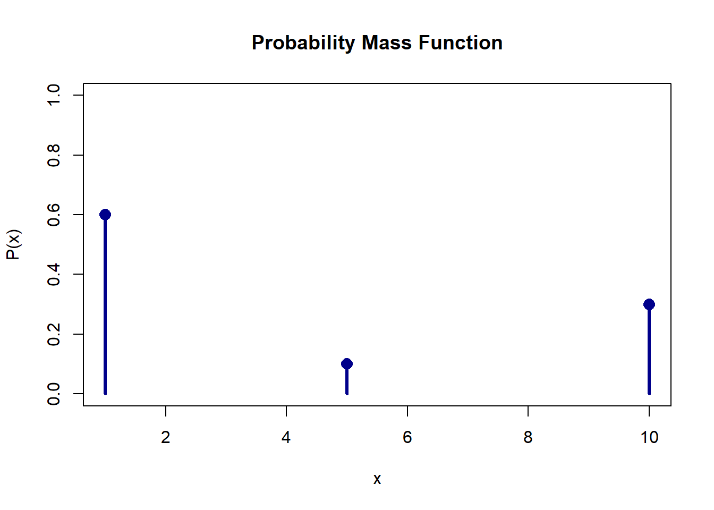
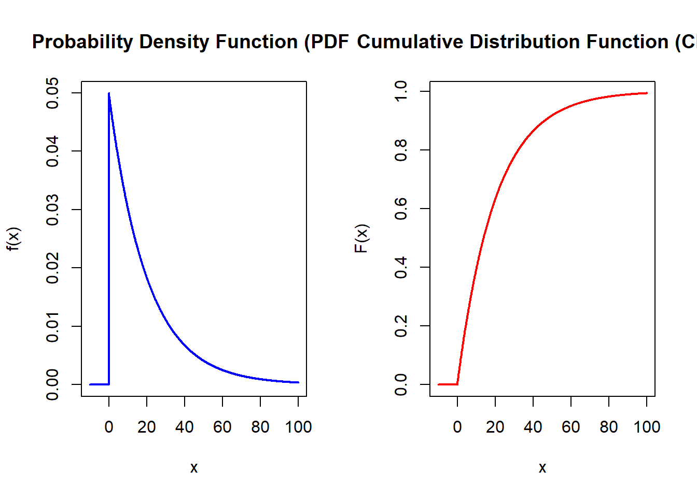

3 Chapter 2: Random Variables, Expectation, and Moments
3.1 Random Variables
When analysing the result of an experiment, it is easier to deal with the function of the possible outcomes rather than the outcome itself
For example, in an experiment of tossing a coin twice and observing the number of Heads, the possible outcomes are: TT, TH, HT, HH
The function is SUM of Heads which are 0, 1, and 2.
These are quantitiesa are Random Variable
Definition 3.1 (Random Variable) Given a random experiment with an outcome space \(S\), a function \(X\) that assigns one and only one real number \(X(s) = x\) to each element \(s\) in \(S\) is called a random variable.
The space of \(X\) is the set of real numbers \(\{x: X(s) = x, s \in S\}\), where \(s \in S\) means that the element \(s\) belongs to the set \(S\).
A random variable, usually written \(X\), is a variable whose possible values are numerical outcomes of a random phenomenon.
A random variable assigns a numerical value to each outcome in a sample space.
Looking it in mathematical function
Domain: TT, HT, TH, HH
Function, \(X\): The rule you define (i.e. The number of Head)
Space of \(X\), Range: 0, 1, 2
Example 3.1 A rat is selected at random from a cage and its sex is determined.
The set of possible outcomes is female and male.
The outcome space is \(S = \{\text{female}, \text{male}\} = \{F, M\}\).
Let \(X\) be a function defined on \(S\) such that \(X(F)= 0\) and \(X(M)=1\).
\(X\) is then a real-valued function that has the outcome space \(S\) as its domain and the set of real numbers \(\{x: x= 0, 1\}\) as its range.
We call \(X\) a random variable and the space associated with \(X\) is \(\{x: x=0, 1\}\).
It may be possible that the set \(S\) has elements that are themselves real numbers.
-In such an instance, we could write \(X(s) = s\) so that \(X\) is the identity function, and the space of \(X\) is also \(S\).
Example 3.2 The experiment is tossing a die. Then the outcome space associated with this experiment is \(S= \{1, 2, 3, 4, 5, 6\}\) with elements of \(S\) indicating the number of spots on the side facing up.
For each \(s \in S\), let \(X(s) = s\).
The space of the random variable \(X\) is then \(\{1, 2, 3, 4, 5, 6\}\).
Exercise 3.1 Complete the table with space of \(X\)
| Experiment | Possible Outcomes, \(S\) | Function \(X\) | Space of \(X\) |
|---|---|---|---|
| Toss two dice | (1, 1), (1, 2) … (6, 6) | \(X\): Sum of the two dice | |
| Toss a coin 5 times | (TTTTT), (TTTTH), …., (HHHHH) | \(X\): Number of Tail | |
| Apply different amount of fertilizer to palm trees in 2 acres | Weight of fertilizers | \(X\): Weight of palm fruits / 2 acres |
Example 3.3 Tossing 3 fair coins. \(Y\) denoted the number of heads that appear. Then, \(Y\) is a RV taking on one of the values 0, 1, 2 and 3 with respective probabilities:
\(P(Y=0) = P(TTT) = 1/8\)
\(P(Y=1) = P[(HTT,THT,TTH)] = 3/8\)
\(P(Y=2) = P[(HHT,HTH,THH)] = 3/8\)
\(P(Y=3) = P(HHH) = 1/8\)
3.3 Discrete Random Variable
It is a random variable (RV) that can take on at most countable number of possible values.
Probability distribution for a discrete random variable:
can be represented by a formula, a table, or a graph, which provides \(P(X) = P(X=x)\) for all \(x\).
It assigns nonzero probabilities to only a countable number of distinct \(x\) values.
Any value \(x\) not explicitly assigned a positive probability is understood to be such that \(P(X=x) = 0\).
The function \(f(x) = p(x) = P(X=x)\) for each \(x\) within the range of \(X\) is called the probability distribution of \(X\).
It is often called the probability mass function (p.m.f) for the discrete random variable \(X\).
For the p.m.f, \(f(x)\) is positive for at most a countable number of values of \(x\) and satisfies the following properties:
\(f(x_i) \ge 0, x \in S\)
\(\sum_{x \in S} f(x_i) = 1\)
\(P(x \in A) = \sum_{x \in A} P(x), A \subset S\)
Example 3.4 We can plot the p.m.f in graphical format
| \(x\) | \(0\) | \(1\) | \(2\) |
|---|---|---|---|
| \(P(x)\) | 1/4 | 1/2 | 1/4 |

Exercise 3.2 Let a chip be taken at random from a bowl that contains six white chips, three red chips, and one blue chip. Let the random variable \(X = 1\) if the outcome is a white chip, let \(X = 5\) if the outcome is a red chip, and let \(X = 10\) if the outcome is a blue chip.
- Find the pmf of \(X\).
| \(x\) | 1 | 5 | 10 |
|---|---|---|---|
| \(P(X = x)\) | \(\frac{3}{5}\) | \(\frac{1}{10}\) | \(\frac{3}{10}\) |
- Graph the pmf as a line graph.

Exercise 3.3 A tech company manufactures high-end smartphones. Before shipping, an automated inspector checks batches of 4 phones for screen defects. Let \(X\) be the discrete random variable representing the number of defective phones found in a randomly selected batch of 4.Based on historical data, the probability mass function (PMF) \(P(X = x)\) is given as follows:
| \(x\) (Defects) | 0 | 1 | 2 | 3 | 4 |
|---|---|---|---|---|---|
| P(X=x)$ | 0.70 | 0.18 | 0.08 | k | 0.01 |
- Find the value of \(k\) to complete the PMF.
Let \(X\) be the number of defect
\[\begin{align} \sum_{i=0}^{4} P(x_{i}) &= 1 \\ 1 - (0.7 + 0.18 + 0.08 + 0.01) = 0.03 \end{align}\]
- What is the probability that a batch has at least 2 defective phones?
\[\begin{align} P(X \ge 2) &= P(X = 2) + P(X = 3) + P(X = 4) \\ =& 0.08 + 0.03 + 0.01 = 0.12 \end{align}\]
- What is the probability that a batch has fewer than 3 defective phones?
\[\begin{align} P(X < 3) &= 1 - P(X = 3) - P(X = 4) \\ =& 1 - 0.03 - 0.01 = 0.96 \end{align}\]
Exercise 3.4 A ride-hailing driver operates in a busy downtown district. Let \(Y\) be the discrete random variable representing the number of passenger ride requests the driver receives during a 15-minute period.
The PMF of \(Y\) is estimated as:
\[P(Y = y) = \begin{cases} 0.15 & \text{if } y = 0 \\ 0.40 & \text{if } y = 1 \\ 0.30 & \text{if } y = 2 \\ 0.15 & \text{if } y = 3 \\ 0 & \text{otherwise} \end{cases}\]
Verify that this function satisfies the two fundamental properties of a valid PMF.
Non-negativity: All probabilities for each values that \(Y\) can take are all greater than 0
Sum of the probabiility is equal to 1
\[0.15 + 0.40 + 0.30 + 0.15 + 0 = 1\]
3.4 Continuous Random Variable
\(X\) is a continuous RV if there exists a nonnegative function \(f(x)\) defined for all real \(x \in (-\infty, \infty)\), having the property that for any set \(B\) of real numbers, \(P(X \in B) = \int_B f(x)dx\).
Probability distribution for a continuous random variable: \(f(x)\) is approximately equal to the relative frequency of the interval \(\{x: a < x < b\}\) and hence can be thought of as an estimate of the probability that the RV \(X\) falls into the interval \((a, b)\). This probability is often written as \(P(a < x < b) = \int_{a}^{b} f(x)dx\). It is often called the probability density function (pdf) for the continuous random variable \(X\).
3.4.1 Properties of continuous Random Variable
The p.d.f. \(f(x)\) satisfies:
\(f(x) > 0\) for \(x \in S\) .
\(\int_{-\infty}^{\infty} f(x) dx = 1\) .
\(P(a < x < b) = \int_a^b f(x) dx\) .
Note: If \(a=b\), then \(P(x=a) = \int_a^a f(x) dx = 0\).
If \(a, b \subseteq S\), then the probability of the event \(\{a < x < b\}\) is \(P(a < x < b) = \int_{a}^{b} f(x)dx\).
Remarks: if \(a=b\), then \(P(x=a) = \int_{a}^{a} f(x)dx = 0\).
Example 3.5 Suppose that \(X\) is a continuous random variable whose probability density function is given by:
\[\begin{align} f(x) = \begin{cases} C(4x - 2x^2) & 0 < x < 2 \\ 0 & \text{otherwise} \end{cases} \end{align}\]
What is the value of \(C\)?
Find \(P(X>1)\).
Solution:
- Since \(f\) is a probability density function, we must have
\[\int_{-\infty}^{\infty} f(x)dx = 1\]
\[\begin{align} C \int_{0}^{2} (4x - 2x^2)dx =& 1 \\ C \left[2x^2 - \frac{2x^3}{3} \right]_0^2 =& 1 \\ C =& \frac{3}{8} \end{align}\]
- Hence, \(P(X>1) = \frac{3}{8} \int_{1}^{2} (4x - 2x^2)dx = \frac{1}{2}\).
Exercise 3.5 The amount of time in hours that a computer functions before breaking down is a continuous random variable with probability density function given by \[f(x) = \begin{cases} \lambda e^{-x/100} & x \ge 0 \\ 0 & x < 0 \end{cases}\]
What is the probability that:
A computer will function between 50 and 150 hours before breaking down?
It will function for fewer than 100 hours?
3.4.2 Cumulative Distributive Function (CDF)
Definition 3.2 (Cumulative Distributive Function (CDF)) The cumulative distribution function or CDF of a RV \(X\), denoted by \(F(x)\) is defined by \[F(x) = P(X \le x), \text{ for all } x.\] \[F(x) = \begin{cases} \sum_{X \le x} P(x) & \text{discrete R.V} \\ \int_{-\infty}^{x} f(t)dt & \text{continuous R.V} \end{cases}\]
Example 3.6 Consider the table below:
| \(x\) | \(1\) | \(2\) | \(3\) | \(4\) |
|---|---|---|---|---|
| \(P(x)\) | \(1/4\) | \(1/2\) | \(1/8\) | \(1/8\) |
\[F(x) = \begin{cases} 0 & x < 1 \\ 1/4 & 1 \le x < 2 \\ 3/4 & 2 \le x < 3 \\ 7/8 & 3 \le x < 4 \\ 1 & 4 \le x \end{cases}\]

Example 3.7 Let \(X\) has the p.d.f of \(f(x) = \begin{cases} 0 & -\infty < x < 0 \\ \frac{1}{20}e^{-x/20} & 0 \le x < \infty \end{cases}\)
To obtain C.D.F, \[F(x) = \int_{-\infty}^{x} f(t)dt = \int_{0}^{x} \frac{1}{20} e^{-t/20} dt = \left[ -e^{-t/20} \right]_0^x = 1 - e^{-x/20}\] Also, \(F'(x) = f(x)\).
3.4.3 Relationship between CDF, \(F(x)\) and p.m.f or p.d.f
\(F(x) \rightarrow\) p.m.f , p.d.f
If discrete, \(P(x = a) = F(a) - F(a^-)\)
If continuous, \(f(x) = \frac{dF(x)}{dx} = F'(x)\)
p.m.f, p.d.f \(\rightarrow F(x)\)
If discrete, \(F(x) = \sum P(x)\)
If continuous, \(F(x) = \int_{-\infty}^{x} f(x)dx\)
| Transformation | Variable Type | Formula |
|---|---|---|
| F(x) \(\rightarrow\) p.m.f, p.d.f | If discrete | \(P(x = a) = F(a) - F(a^-)\) |
| If continuous | \(f(x) = \frac{dF(x)}{dx} = F'(x)\) | |
| p.m.f, p.d.f \(\rightarrow\) F(x) | If discrete | \(F(x) = \sum P(x)\) |
| If continuous | \(F(x) = \int_{-\infty}^{x} f(x)dx\) |
3.4.4 Properties of CDF
\(F(x)\) is CDF if and only if the following 3 conditions hold:
\(\lim_{x \to -\infty} F(x) = 0\) and \(\lim_{x \to \infty} F(x) = 1\)
\(F(x)\) is non decreasing function of \(x\)
\(F(x)\) is right continuous
Example 3.8 A batch of 15 items contains 6 defective ones. A random sample of 5 is chosen. Let \(X\) be the number of defective items in the sample. Find the probability function and cumulative distribution function for \(X\).
Solution
Exercise 3.6 Let \(X \in \mathbb{R}\) with PDF as
\[\begin{align} f(x) = \begin{cases} 0 & -\infty < x < 0 \\ \frac{1}{20} \exp \left(-\frac{x}{20}\right) & 0 \le < \infty \end{cases} \end{align}\]
Derive the CDF of \(X\).
Solution \[\begin{align} F(x) &= \int_{-\infty}^{0} f(t) \ dt \\ &= \int_{0}^{x} \frac{1}{20} \exp \left(-\frac{x}{20}\right) \ dt \\ &= \left[-\frac{x}{20}\right]_{0}^{x} = 1 - \exp \left(-\frac{x}{2-}\right) \end{align}\]
Check: the derivative of \(F(x)\) must equal to \(f(x)\)

Exercise 3.7 The random variable X has probability density function given by
\[\begin{align} f(x) = \begin{cases} \frac{k}{(1 + x)^{4}} & \text{for} \ x \ge 0 \\ 0 & \text{for} \ x \le 0 \end{cases} \end{align}\]
For some positive constant \(k\). Find the value of \(k\), the distribution function \(F(x)\) and the probabilities \(P(X \le 1)\), \(P(X > 1)\) and \(P(1 \le X \le 2)\).
3.5 Expected Values and Expected Function
It is a value that were expected to emerge when performing some random experiment. So basically, it is average or mean of the outcomes.
Definition 3.3 (Expected Values and Expected Function) The expected value or mean of a random variable \(X\), denoted by \(E(X)\) is: \[\mu = E(X) = \begin{cases} \int_{-\infty}^{\infty} x f(x)dx & \text{if } X \text{ is continuous} \\ \sum x f(x) = \sum g(x)P(X=x) & \text{if } X \text{ is discrete} \end{cases}\]
Example 3.9 (Example 8) Let \(X\) equal number of spot on the side facing upwards after a six-sided die (one of pair of dice) is cast at a random. If everything is fair about this experiment, a reasonable probability model is given by the P.M.\(F\).
\[f(x) = P(X = x) = \frac{1}{6}\] where \(x = 1, \ldots, 6\).
Find the expected value of the distribution of \(X\).
Solution
\(X\) is the number of spot on the side facing upwards after a six-sided die. To find the expected value,
\[\begin{align} E[X] &= \sum x f(x) = \sum_{1}^{6} x \frac{1}{6}\\ &= \left(1 + 2 + 3 + 4 + 5 + 6 \right)\frac{1}{6} \\ &= \frac{7}{2} = 3.5 \end{align}\]
Example 3.10 (Example 9) From previous Example 8, Let \(Y=X^2\), then \(Y\) is also a random variable such that p.m.f of \(Y\) is \(g(y) = P(Y=y) = 1/6\), where \(y=1,4,9,16,25,36\). Suppose we wanted to find the expected value of \(Y\), \(E(Y)\), and \(Y=X^2\), then we can also compute: \[E(Y) = E(X^2) = \sum_{x=1}^{6} x^2 f(x) = \frac{1^2}{6} + \frac{2^2}{6} + \frac{3^2}{6} + \frac{4^2}{6} + \frac{5^2}{6} + \frac{6^2}{6} = \frac{91}{6}\] Note that, \(E(X^2)\) also known as second moment about the origin with respect to variable \(X\).
Example 3.11 (Example 10) Given that \(X\) is the number of spot on the side facing upwards after a six-sided die.
Let \(Y\) be the squared of number of spot on the side facing upwards after a six-sided die with the P.M.F of
\[\begin{align} g(y) = P(Y = y) = \frac{1}{6} \end{align}\]
where \(y = 1, 4, 9, 16, 25, 36\). Find the expectation of \(Y\).
Solution
In this question, \(Y\) is a function of \(X\) where \(Y = X^2\)
The value of \(Y\) is no longer the value shown on the surface
To find the expectation of \(Y\), we must change the formula
\[\begin{align} E[Y] &= \sum y f(y) = \sum_{1}^{6} y \frac{1}{6}\\ &= \left( 1 + 4 + 9 + 16 + 25 + 36 \right)\frac{1}{6} \\ &= \frac{91}{6} = 15.167 (3 \text{dp}) \end{align}\]
\(E[Y]\) = \(E[X^2]\) is the second moment about the origin with respect to variable \(X\)
Exercise 3.8 A batch of 15 items contains 6 defective ones. A random sample of 5 is chosen. Let \(X\) be the number of defective items in the sample.
Calculate the expected value of the distribution of \(X\).
Example 3.12 (Example 11) Let \(X \in \mathbb{R}\) be a random variable with PDF of
\[\begin{align} f(x) = \begin{cases} 2x & \text{when} \qquad 0 \le x \le 1 \\ & \\ 0 & \text{otherwise} \end{cases} \end{align}\]
Calculate the expected value of the distribution of \(X\).
Solution
\[\begin{align} E[X] &= \int_{0}^{1} x f(x) \\ &= \int_{0}^{1} 2x^2 \\ &= \left[\frac{2x^3}{3}\right]_{0}^{1} \\ &= \frac{2}{3} \end{align}\]
3.5.1 Expected Values: Properties
Let \(a, c \in \mathbb{R}\) and \(X\) and \(Y\) be random variables with the same sample space.
Expectation of a constant is a constant: \(E(c) = c\).
\(E[aX] = aE[X]\).
Linearity: \(E[X] + c = E[X] + c\).
Additivity: \(E[X + Y ]= E[X] + E[Y]\).
\(|E(X)| \leq E(|X|)\).
3.6 Variance and standard deviation
Calculation for Variance and standard deviation can also be calculated using expectation. Where: \[Var(X) = E[(X-\mu)^2] = E(X^2) - \mu^2\] \[\sigma = \sqrt{Var(X)}\]
The variance, denoted by \(\sigma^{2}\).
Continuous: \(Var[X] = \int_{-\infty}^{\infty} x^{2} f(x) dx - (\int_{-\infty}^{\infty} x f(x) \ dx)^{2}\)
Discrete: \(Var[X] = \sum x^2 f(x) - (\sum x f(x))^{2}\)
- provided that the integral or sum exists
SD, \(\sigma\), is just the square root of variance
Example 3.13 (Example 16) Let the P.M.F. of \(X\) be defined by \(f(x)=x/6\), where \(x = 1, 2, 3\).The mean of \(X\) is
\[\mu = E[X] = 1 \left(\frac{1}{6}\right) + 2 \left(\frac{2}{6}\right) + 3 \left(\frac{3}{6}\right) = \frac{7}{3}\] Find the variance and standard deviation of \(X\).
Solution: Let \(X = 1, 2, 3\) with the P.M.F of \(f(x)=x/6\)
\[\begin{align} Var[X] =& E[(X-\mu)^2] = E[X^2] - \mu^2 \\ =& E[X^2] - \frac{7}{3} \end{align}\]
The second order moment of \(X\) is \(E[X^{2}]\)
\[\begin{align} E[X^{2}] = 2 \left(\frac{1}{6}\right) + 4 \left(\frac{2}{6}\right) + 9 \left(\frac{3}{6}\right) = \frac{37}{6} = 6.167 \ (3 \ \text{dp}) \end{align}\]
Example 3.14 (Example 17) Compute the variance of the discrete distribution where
\(p(0) = 35/210\)
\(p(1) = 105/210\)
\(p(2) = 63/210\) and
\(p(3) = 7/210\).
Solution:
First, calculate the expected value \(E[X]\): \[\begin{align} E[X] &= \sum_{x=0}^{3} x \cdot p(x) \\ &= (0)\left(\frac{35}{210}\right) + (1)\left(\frac{105}{210}\right) + (2)\left(\frac{63}{210}\right) + (3)\left(\frac{7}{210}\right)\\ &= 0 + \frac{105}{210} + \frac{126}{210} + \frac{21}{210} = \frac{252}{210} = 1.2 \end{align}\]
Next, calculate the second moment, \(E[X^2]\):
\[\begin{align} E[X^2] &= \sum_{x=0}^{3} x^2 \cdot p(x) \\ &= (0^2)\left(\frac{35}{210}\right) + (1^2)\left(\frac{105}{210}\right) + (2^2)\left(\frac{63}{210}\right) + (3^2)\left(\frac{7}{210}\right)\\ &= 0 + \frac{105}{210} + \frac{252}{210} + \frac{63}{210} = \frac{420}{210} = 2 \end{align}\]
Finally, compute the variance \(\text{Var}(X)\) using the variance formula:
\[\begin{align} \text{Var}(X) &= E[X^2] - (E[X])^2 \\ &= 2 - (1.2)^2 = 2 - 1.44 = 0.56 \end{align}\]
Example 3.15 (Example 18) Show that \(Var[a + bX] = b^2 Var[X]\).
Solution:
By the definition of variance, for any random variable \(Y\), we have:
\[\text{Var}(Y) = E[(Y - E[Y])^2]\]
Let \(Y = a + bX\). First, we determine the expected value of \(Y\) by applying the linearity of expectation:
\[E[a + bX] = a + bE[X]\]
Next, we substitute \(a + bX\) and its expected value into the variance formula:
\[\begin{align} \text{Var}(a + bX) &= E[((a + bX) - E[a + bX])^2] \\ &= E[((a + bX) - (a + bE[X]))^2] \end{align}\]
Simplify the terms inside the inner parentheses by canceling out the constant \(a\):
\[\begin{align} \text{Var}(a + bX) &= E[(bX - bE[X])^2] \\ &= E[(b(X - E[X]))^2] \\ &= E[b^2(X - E[X])^2] \end{align}\]
Because \(b^2\) is a constant, it can be factored out of the expectation: \[\text{Var}(a + bX) = b^2 E[(X - E[X])^2]\]
Finally, by recognizing that \(E[(X - E[X])^2]\) is the formal definition of \(\text{Var}(X)\), we conclude the proof:
\[\text{Var}(a + bX) = b^2 \text{Var}(X)\]
Example 3.16 (Example 19) Let \(X\) be a contious random variable with the P.D.F
\[\begin{align} f(x) = \begin{cases} 2x \qquad for \quad 0 \le x \le 1 \\ 0 \qquad for \quad \text{otherwise} \\ \end{cases} \end{align}\]
Find the expected value, standard deviation of \(X\).
Solution
\[\begin{align} E[X] &= \int x f(x) \\ &= \int_{0}^{1} x (2x) = \int_{1}^{1} 2x^2\\ &= \left[\frac{2}{3}x^{3}\right]_{0}^{1} = \frac{2}{3}\\ \end{align}\]
3.7 Functions of Random Variable
If \(X\) is a random variable with CDF \(F_{X}(x)\), the function of \(X\) (e.g. \(g(X)\)) is also a random variable.
We can rewrite the \(g(X)\) as \(Y = g(X)\)
Hence, \(Y\) is a function of \(X\)
3.7.1 Functions of Random Variable: Expected Values
If \(X\) is a random variable and \(g(X)\) is a function of \(X\). The expected value of \(E[g(X)]\) is
\[\begin{align} E[g(X)] = \begin{cases} \int g(x)f_{X}(x) \ dx & \text{if $X$ is continuous} \\ & \\ \sum g(x)f_{X}(x) = \sum g(x)P(X = x) & \text{if $X$ is discrete} \end{cases} \end{align}\]
Example 3.17 (Example 13 (Continuous case)) Let \(X\) be a continuous random variable representing the lifetime of a specific machine component (in years), with the P.D.F:
\[\begin{align} f(x) = \begin{cases} \frac{1}{2} \exp \left(-\frac{x}{2}\right) & \text{for } x \ge 0 \\ 0 & \text{otherwise} \end{cases} \end{align}\]
Suppose the maintenance cost (in RM) over the component’s lifetime is given by the function \(g(X) = 50 + 10X^2\).
Find the expected maintenance cost, \(E[g(X)]\).
Solution: By the linearity of expectation, we know that: \[E[g(X)] = E[50 + 10X^2] = 50 + 10E[X^2]\]
First, find the second moment, \(E[X^2]\): \[\begin{align} E[X^2] &= \int_{-\infty}^{\infty} x^2 f(x) dx \\ &= \int_{0}^{\infty} x^2 \left( \frac{1}{2} \exp \left(-\frac{x}{2}\right) \right) dx \end{align}\]
Using integration by parts (or the Gamma function property \(\int_0^\infty x^n e^{-ax} dx = \frac{n!}{a^{n+1}}\)): \[\begin{align} E[X^2] &= \frac{1}{2} \left( \frac{2!}{(1/2)^3} \right) \\ &= \frac{1}{2} (16) = 8 \end{align}\]
Now, substitute \(E[X^2]\) back into the cost function:
\[\begin{align} E[g(X)] &= 50 + 10(8) \\ &= 50 + 80 = 130 \end{align}\]
The expected maintenance cost is RM 130.
3.7.2 Functions of Random Variable: Expected Values Properties
Let \(X\) be a random variable and \(a, b, c \in \mathbb{R}\). Then, for any functions \(g_{1}(x)\) and \(g_{2}(x)\) whose expectations exists:
\(E[ag_1(x) + bg_2(x) + c] = aEg_1(x) + bE[g_2(x)] + c\)
If \(g_1(x) \geq 0\) for all \(x\), then \(E[g_1(x)] \geq 0\)
If \(g_1(x) \geq g_2(x)\) for all \(x\), then \(E[g_1(x)] \geq E[g_2(x)]\)
If \(a \leq g_1(x) \leq b\) for all \(x\), then \(a \leq E[g_1(x)] \leq b\)
Example 3.18 (Example 14) Suppose Grab charges a fixed fare of RM4 plus a mileage charge of RM2 per kilometer. Write the
If the journey length in kilometers is regarded as a random variable \(X\), the linearity property \[E[4 + 2X] = 4 + 2E[X]\] just says that the average journey fare is RM4 plus RM2 times the average journey length. This is true whatever the distribution of \(X\) is: the fare depends linearly on the journey length.
Example 3.19 (Example 15) Uber charges a fare in RM of \(y(X) = 4\sqrt{1 + X}\) for a journey of length X kilometers. Suppose the probability density function for \(X\) is \[f(x) = \frac{3}{(1 + x)^{4}}\].
Find the mean fare.
Solution:
To find the expected fare, we need to calculate the expected value of the fare function \(y(X) = 4\sqrt{1 + X}\), given the continuous probability density function \[f(x) = \frac{3}{(1 + x)^4}\] for journey lengths \(x \ge 0\)
Using the definition of expectation for a function of a continuous random variable, we integrate over the support of \(X\):
\[E[y(X)] = \int_{0}^{\infty} y(x) f(x) dx\]
Substitute the given equations into the integral:
\[E[y(X)] = \int_{0}^{\infty} \left(4\sqrt{1+x}\right) \left(\frac{3}{(1+x)^4}\right) dx\]
Combine the terms by converting the square root to a fractional exponent:
\[E[y(X)] = \int_{0}^{\infty} 12 (1+x)^{1/2} (1+x)^{-4} dx\] \[E[y(X)] = 12 \int_{0}^{\infty} (1+x)^{-7/2} dx\]
Perform the integration: \[\begin{align} E[y(X)] &= 12 \left[ \frac{(1+x)^{-5/2}}{-5/2} \right]_{0}^{\infty} \\ &= 12 \left( -\frac{2}{5} \right) \left[ (1+x)^{-5/2} \right]_{0}^{\infty} \\ &= -\frac{24}{5} \left( \lim_{x \to \infty} \frac{1}{(1+x)^{5/2}} - \frac{1}{(1+0)^{5/2}} \right) \\ &= -\frac{24}{5} (0 - 1) \\ &= \frac{24}{5} \\ &= 4.8 \end{align}\]
The expected fare for the journey is RM 4.80.
Exercise 3.9 (Example 19) Find \(E(X)\), \(Var(X)\) and Standard deviation of \(X\) when the density function of \(X\) is \(f(x) = 2x\) if \(0 \le x \le 1\), and \(0\) if \(x\) is otherwise.
Solution:
Given the continuous probability density function \(f(x) = 2x\) for \(0 \le x \le 1\)[cite: 11].
1. Calculate the Expected Value, \(E(X)\): Use the formula for the continuous expected value: \[\begin{align} E[X] =& \int_{-\infty}^{\infty} x f(x) dx \\ =& \int_{0}^{1} x(2x) dx \\ =& \left[ \frac{2x^3}{3} \right]_{0}^{1} \\ =& \frac{2(1)^3}{3} - 0 = \frac{2}{3} \\ \end{align}\]
2. Calculate the Second Moment, \(E[X^2]\):
\[\begin{align} E(X^2) =& \int_{0}^{1} x^2 f(x) dx \\ =& \int_{0}^{1} x^2(2x) dx \\ =& \int_{0}^{1} 2x^3 dx \\ =& \left[ \frac{2x^4}{4} \right]_{0}^{1} \\ =& \frac{2}{4} = \frac{1}{2} \end{align}\]
3. Calculate the Variance, \(Var(X)\):
\[\begin{align} Var(X) =& E(X^2) - (E(X))^2 \\ =& \frac{1}{2} - \left(\frac{2}{3}\right)^2 \\ =& \frac{1}{2} - \frac{4}{9} \\ =& \frac{9}{18} - \frac{8}{18} = \frac{1}{18} \\ \end{align}\]
4. Calculate the Standard Deviation:
\[\begin{align} \text{SD}[X] =& \sqrt{Var(X)} \\ =& \sqrt{\frac{1}{18}} = \frac{1}{\sqrt{18}} \\ \approx & 0.2357 \end{align}\]
3.7.3 Expectation of function
- If \(X\) is a discrete RV, with \(x_i, i \ge 1\) with probabilities \(p(x_i)\), then \(E[g(X)] = \sum_i g(x_i)p(x_i)\).
- Let \(X\) be a random variable with density \(f(x)\). The expected value of a function \(g(\cdot)\) of the random variable, denoted \(E(g(X))\), is defined to be \(E(g(X)) = \int_{-\infty}^{\infty} g(x)f(x)dx\).
3.7.4 Expectation of function Properties
Let \(X\) be a RV and \(a, b\) and \(c\) are constants. Then, for any functions \(g_1(x)\) and \(g_2(x)\) whose expectations exist:
\(E(ag_1(x) + bg_2(x) + c) = aEg_1(x) + bEg_2(x) + c\)
If \(g_1(x) \ge 0\) for all \(x\), then \(Eg_1(x) \ge 0\)
If \(g_1(x) \ge g_2(x)\) for all \(x\), then \(Eg_1(x) \ge Eg_2(x)\)
If \(a \le g_1(x) \le b\) for all \(x\), then \(a \le Eg_1(x) \le b\)
3.8 Moments and Moment generating function
3.8.1 Moments
Definition 3.4 (Methods of Moments) The moments of RV or of a distributions are the expectations of the powers of the RV which has the given distributions. If \(X\) is a RV, the \(r\)th moment of \(x\) is defined as \(\mu_r' = E[X^r]\). Therefore, the \(r\)th moment about the origin of a random variable is the expected value of \(X^r\):
\[\begin{align} \mu_{r}^{'} = E[X^r] = \begin{cases} \sum_{x} x^r f(x) \\ & \\ \int x^r f(x) \\ \end{cases} \end{align}\]
- The first moment is the mean, i.e. \(E[X]\)
The first moment is \(E(X)\).
3.8.2 Central Moments
Definition 3.5 (Centrol Moments) The \(r\)th moment about the mean of a random variable \(X\), is the expected value of \((X - \mu_X)^r\), symbolically,
\[\mu_r = E[(X - \mu_X)^r] = \begin{cases} \sum_x (x - \mu_X)^r f(x) \\ \int_{-\infty}^{\infty} (x - \mu_X)^r f(x)dx \end{cases}\]
The \(r\)th moment about the mean of a random variable \(X\) is sometimes called the \(r\)th central moment of \(X\). Note that: * \(\mu_1 = E[(X - \mu_X)] = 0\) * \(\mu_2 = E[(X - \mu_X)^2] = Var[X]\) Variance can be also written as \(\sigma_X^2 = \mu_2' - \mu_X^2\).
The first moment is mean of \(E(X)\). The second central moment is the variance. If \(E(X^n)\) exists for some +ve integers \(n\), we call \(E(X^n)\) the \(n\)th moment of \(X\) about the origin. If \(E|X^n| < \infty\) for some +ve real number \(\alpha\), we call \(E|X^n|\) the \(\alpha\)th absolute moment of \(X\).
3.8.3 Moment Generating Function (MGF)
Definition 3.6 (Moment Generating Function (MGF)) Moment generating function \(M(t)\) of the RV \(X\) is defined for all real values of \(t\) by: \[M(t) = E[e^{tx}] = \begin{cases} \sum e^{tx} p(x) & \text{if } X \text{ is discrete} \\ \int_{-\infty}^{\infty} e^{tx} \cdot f(x)dx & \text{if } X \text{ is continuous} \end{cases}\]
Example 3.20 (Example 12 (Discrete case)) Let the p.m.f. of \(X\) be defined by \(f(x) = x/6\), where \(x=1,2,3\). Find the mgf of RV of \(X\).
Example 3.21 (Example 21 (Continuous case)) \(X\) is Random variable with probability density function of \(X\) is
\[\begin{align} f(x) = \begin{cases} 1/6 & \text{for } 1 \le x \le 7 \\ 0 & \text{otherwise} \end{cases} \end{align}\]
Find the mgf of \(X\).
3.8.4 Finding probability distribution from mgf
Sometimes we can find the probability distribution of the random variable from observing their mgf. Since mgf is unique to each RV if the mgf exists. For discrete case; let space of \(S\) is \(\{b_1, b_2, b_3, \dots\}\), then the moment-generating function is given by the expansion: \[M_X(t) = e^{tb_1}f(b_1) + e^{tb_2}f(b_2) + e^{tb_3}f(b_3) + \dots\] Thus, the coefficient of \(e^{tb_i}\) is the probability of \(f(b_i) = P(X=b_i)\).
For continuous case; it is not as easy as the discrete case since it does not involve with expansion. But since mgf is unique to one random variable, we can see that in later topic, it is easy to find the pdf of given mgf.
3.8.5 Properties of mgf
\[M'(t) = \frac{d}{dt}E[e^{tx}] = E\left[ \frac{d}{dt}(e^{tx}) \right] = E[Xe^{tx}]\] \[M'(0) = E(x)\] \[M''(t) = \frac{d}{dt}M'(t) = \frac{d}{dt}E[Xe^{tx}] = E\left[ \frac{d}{dt}(Xe^{tx}) \right] = E[X^2e^{tx}]\] \[M''(0) = E(X^2)\]
- If \(M_X(t)\) exists, then for any positive integer \(k\), \(\frac{d^k M_X(t)}{dt^k} \Big|_{t=0} = M_X^{(k)}(0) = E(X^k)\), i.e. we can find the \(k\)th mgf through the \(k\)th derivative of with respect to \(t\) by setting \(t=0\) (discrete case). We call \(M_X(t)\) the mgf because all the moments of \(X\) can be obtained by differentiating \(M_X(t)\) and then evaluating the result at \(t=0\).
Example 3.22 (Example 11 (Cntinuous case)) using the same problem in example 11, find mean and variance of \(X\) using the mgf.
If \(X\) has mgf, then \(E(X^k) = \frac{d^k M_X(t)}{dt^k} \Big|_{t=0} = M_X^{(k)}(0)\), i.e. the \(n\)th moment of the distribution is equal to the \(n\)th derivative evaluated at \(t=0\) (continuous case).
For independent variable \(X\) and \(Y\); \(M_{X+Y}(t) = M_X(t) \cdot M_Y(t)\) and for any constant \(a,b \in \mathbb{R}\): * \(M_{X+a}(t) = E(e^{(X+a)t}) = e^{at} \cdot M_X(t)\) * \(M_{bX}(t) = E(e^{bXt}) = M_X(bt)\) * \(M_{\frac{X+a}{b}}(t) = E\left(e^{\frac{X+a}{b}t}\right) = e^{\frac{a}{b}t} M_X\left(\frac{t}{b}\right)\)
Exercise 3.10 If the moment-generating function of \(X\) is
\[M(t) = \frac{2}{5}e^t + \frac{1}{5}e^{2t} + \frac{2}{5}e^{3t}\]
Find the mean, variance, and pmf of \(X\).
3.9 Tutorials
Let \(X\) represent the difference between the number of heads and the number of tails obtained when a coin is tossed \(6\) times. What are the possible values of \(X\)?
Computer chips often contain surface imperfections. For a certain type of computer chip, the probability mass function of the number of defects X is presented in the following table.
| \(x\) | 0 | 1 | 2 | 3 | 4 |
|---|---|---|---|---|---|
| \(P(X = x)\) | 0.4 | 0.20 | 0.35 | 0.15 | 0.10 |
Answer the following:
- Find \(P(X \le 3)\).
- Find \(P(X > 2)\).
- Find \(\mu_{X}\) .
- Find \(\sigma^{2}\)
- Find \(\sigma\)
- A survey of cars on a certain stretch of highway during morning commute hours showed that 50% had only one occupant, 25% had 2, 20% had 3, 3% had 4, and 2% had 5. Let \(X\) represent the number of occupants in a randomly chosen car.
- Find \(P(X \le 3)\).
- Find \(P(X > 2)\).
- Find \(\mu_{X}\) .
- Find \(\sigma^{2}\)
- Find \(\sigma\)
- The delay time (in minutes) for vehicles passing through the Mines Highway (Besraya) toll plaza during morning peak hours is modeled by a continuous random variable \(T\).
The probability density function (p.d.f.) for the delay time is given by:\[f(t) = \begin{cases} \frac{1}{2} - \frac{1}{8}t & 0 \le t \le 4 \\ 0 & \text{otherwise} \end{cases}\]a. Find \(P(T \le 2)\).b. Find \(P(T > 3)\).c. Find the expected delay time, \(\mu_T\).d. Find the variance, \(\sigma^2\).e. Find the standard deviation, \(\sigma\).
- The waiting time (in hours) for patients to see a medical officer at a public hospital outpatient clinic in Selangor is modeled by a continuous random variable \(X\). The probability density function (p.d.f.) for the waiting time is given by:
\[f(x) = \begin{cases} \frac{2}{9}x & 0 \le x \le 3 \\ 0 & \text{otherwise} \end{cases}\] Instead of finding the probabilities, the hospital management wants to determine specific target waiting times (\(x\)) based on their Key Performance Indicators (KPIs).
- Find the waiting time \(x\) such that exactly 25% of the patients wait less than \(x\) hours (i.e., find \(x\) where \(P(X \le x) = 0.25\)).
- Find the waiting time \(x\) such that the probability a patient waits longer than \(x\) hours is \(0.64\) (i.e., find \(x\) where \(P(X > x) = 0.64\)).
- Find the median waiting time \(x\) (the time where \(P(X \le x) = 0.50\)).
- Find the expected waiting time a patient will experience, \(E(X)\).
- Patients must pay a hospital parking fee of RM 4.00 per hour of waiting time, alongside a fixed clinic registration fee of RM 5.00. Let \(Y = 4X + 5\) represent the total out-of-pocket cost incurred by a patient before seeing the doctor. Using the linear properties of expectation and variance, calculate the expected total cost, \(E(Y)\), and the variance of the total cost, \(Var(Y)\).
- The number of customers in line at a supermarket express checkout counter is a random variable whose probability mass function is given in the following table.
| \(x\) | 0 | 1 | 2 | 3 | 4 | 5 |
|---|---|---|---|---|---|---|
| \(P(X = x)\) | 0.15 | 0.20 | 0.35 | 0.15 | 0.10 | 0.05 |
Let \(X\) denote the number of customers in line, and let \(Y\) denote the total number of items purchased by all the customers in line. Assume the number of items purchased by one customer is independent of the number of items purchased by any other customer.
- Find \(P(X = 2 \text{and} Y = 2)\).
- Find \(P(X = 2 \text{and} Y = 6)\).
- Find \(P(Y = 2)\).
- A local meteorologist in Dengkil is analyzing daily weather patterns during the November monsoon season. The experiment consists of recording the primary weather condition for a randomly selected day.Based on historical data, the outcome space \(S\) consists of four weather conditions with the following probabilities:
| Weather conditions | Sunny (S) | Cloudy (C) | Rainy (R) | $Thunderstorm (T) |
|---|---|---|---|---|
| Probability | \(0.15\) | $\(0.35\) | \(0.40\) | \(0.10\) |
To evaluate the potential impact on local infrastructure, the meteorologist defines a discrete random variable \(X\) representing the “Weather Severity Index.” The index assigns a value of:
- \(0\) for Sunny
- \(1\) for Cloudy
- \(3\) for Rainy
- \(5\) for a Thunderstorm.
Answer the following:
Construct the probability mass function (PMF) table for the random variable \(X\). (4 marks)
Calculate the probability that a randomly selected day has a severity index of strictly less than 3. (2 mark)
Calculate the expected Weather Severity Index, \(E(X)\), for a day in November. (3 marks)